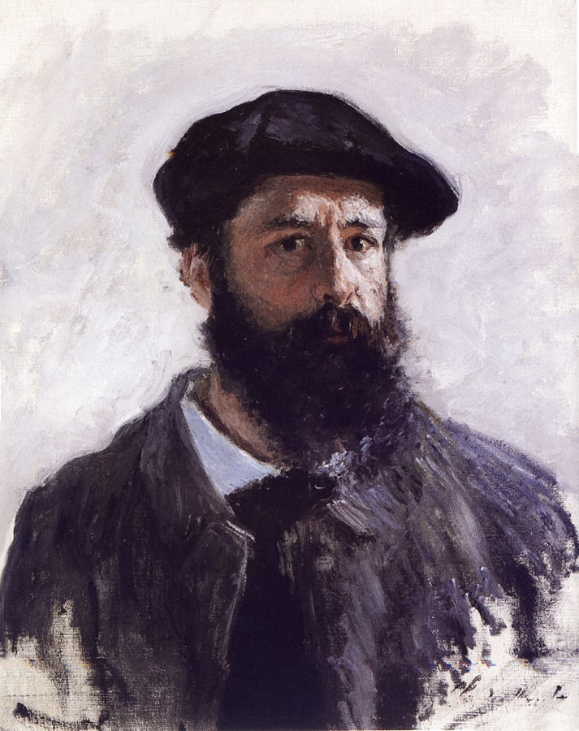
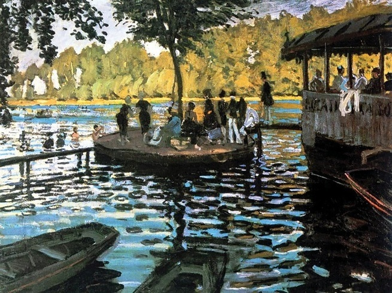
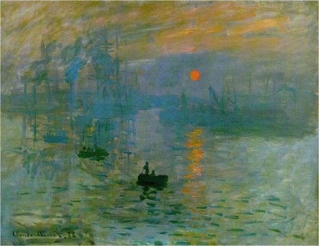
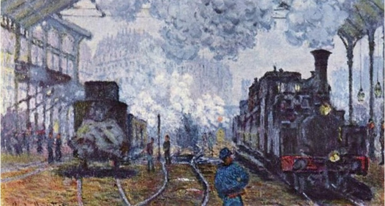

Claude Monet

Claude Monet (1840-1926) foi um pintor francês considerado um dos mais importantes pintores da Escola Impressionista. O termo impressionista surgiu durante uma exposição realizada em 1874, quando o quadro de Monet, "Impressão, Nascer do Sol", foi criticado por retratar a “impressão” de uma cena e não a realidade. O termo que fora usado pejorativamente se tornou corrente e Monet passou a ser considerado o chefe da Escola Impressionista, uma das mais importantes da história da pintura. Seu quadro encontra-se hoje no Museu Marmottan Monet, em Paris.
Oscar-Claude Monet nasceu em Paris, França, no dia 14 de novembro de 1840. Filho de um modesto comerciante, quando tinha cinco anos mudou-se com a família para Saint-Adresse, próximo ao porto de Le Havre, na Normandia. Desejava ser pintor e recebeu o incentivo da tia Marie-Jeanne Lacadre, uma amante da pintura.
Com 15 anos ficou conhecido em sua cidade por fazer e vender caricaturas. O interesse de Monet pela luz e pela cor teve influência nas gravuras japonesas de Hokusai e na pintura de Eugène Boudin, que o incentivou a praticar a pintura ao ar livre e se tornar um pintor paisagista, pouco comum na época.
Entre 1859 e 1860, Monet esteve em Paris, onde se entusiasmou com as pinturas de Charles Daubigny e Constant Troyon na Escola de Barbizon. Apesar da insistência da família, recusou-se a ingressar na Escola de Belas Artes e preferiu visitar os locais frequentados pelos inovadores da época.

Banhistas de Grenouillière

Impressão, Nascer do Sol

Mulher com Sombrinha

Estação de Saint-Lazare